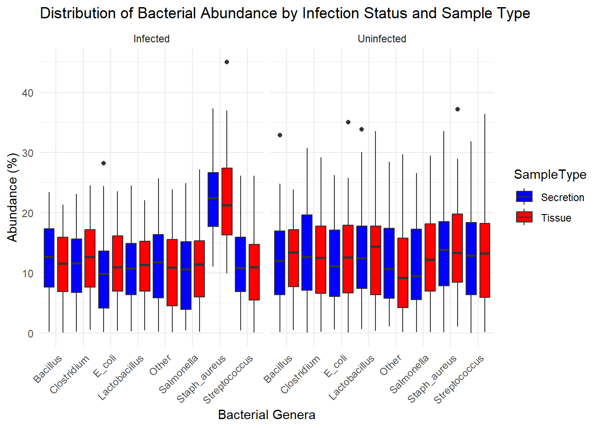

The Impact of Staph. aureus Mastitis on Udder Tissue and Secretions in Heifers During Induced Lactogenesis
Assignment
DataViz
Author
Betsy Church
Published
April 3, 2025
Preamble
One of the largest sources of loss in the dairy industry is mastitis. Mastitis, an infection of the mammary tissue, is common before or during first lactation in heifers. Infections during initial lactogenesis can cause issues with low milk supply throughout the first and subsequent lactations in cows. Here, we are trying to determine if there is a change in the udder microbiome by exposing one quarter of the udder to S.aureus via infusion while exposing another different quarter to an infusion of saline. Secretions from the udders were collected over the course of 20 days. On the final day of the study, the heifers were sacrificed and tissue from the 2 quarters were collected. In each quarter, a portion of the tissue close to the gland cistern (center) was collected along with a portion of tissue closer to the fat pad (edge).
Using the collected secretions and tissue samples, we will attempt to discover: 1. Is there a microbiome detectable in mammary tissue? 2. Is there a tissue microbiome difference within the same cow between infected/uninfected quarters of the udder? 3. Is there a tissue microbiome difference within the same cow between the edge versus center tissue of the infected/uninfected tissue? 4. How does an IMI with S. aureus affect the microbiome of milk secretions? Is there a change over time? 5. How does the microbiome of the tissue samples compare to the microbiome of the secretion samples?
Data
Since this research is still in the data collection phase, I chose to use mock data that Anything LLM came up with for me.
This data set was not conducive to spatial or networking data. For this, I will be using breastfeeding rates by state, found at https://www.cdc.gov/breastfeeding-data/breastfeeding-report-card/index.html
Visualizations
Bar chart comparing Tissue Locations to Relative Abundance
I asked Anything LLM to make me a mock relative abundance data set for tissue from the same animal but for 2 separate locations within the quarters. Bar charts are a great visualization tool because human eyes like them! Using color and height of the bars, it is an easy way to compare groups. In this bar chart, I used color channels to differentiate between the tissue locations. The bars compare the mean relative abundance of 4 specific genera and a non-specific ‘other’ group. From this visualization, we can see that across all bacteria genera the mean relative abundance stays pretty consistent based on the tissue type, with edge tissue containing a slightly higher mean than center tissue.
Code
library(tidyverse)use_this_mock <-read.csv("C:/Users/betsy/OneDrive/use_this_mock.csv")data <-data.frame(use_this_mock,Location =c('Edge', 'Center'),Infection_Status=c('Infection.Status'),Bacteria =c('Staph.aureus', 'E..coli', 'Lactobacillus','Bacillus','Other'))long_data <- data %>%pivot_longer(cols =c(Staph.aureus, E..coli, Lactobacillus, Bacillus, Other),names_to ="Bacterial_Types",values_to ="Abundance" )# Create the bar graphggplot(long_data, aes(x = Bacteria, y = Abundance, fill = Location)) +geom_bar(stat ="identity", position ="dodge") +labs(title ="Relative Abundance of Bacteria by Tissue Location",x ="Bacterial Species",y =" Mean Relative Abundance (%)") +theme_minimal() +scale_fill_manual(values =c("Edge"="skyblue", "Center"="orange"))
Mean Relative Abundance between Infected and Uninfected Tissue Samples
I wanted to compare the mean Relative Abundance across 80 animals, comparing the uninfected quarter to the infected quarter tissue samples. Once again, I am using a bar chart. The color channels represent the infection status of the quarter sample, with red being infected and blue being uninfected. With this bar chart, I asked it for extra genera of bacteria, so this time we have 7 genera (with some specific species as well) and then one category of ‘other’ genera. We see consistency among the genera based on infection status across all the categories except S.aureus, which is much higher in the infected quarter sample. This makes sense, considering the infected quarter was infused with S.aureus.
Initially, I considered using only a bar chart for this data. I opted to add a box and whisker plot as well. A box and whisker plot allows for more information. Box and whisker plots are great because they show you the minimum and maximum of your data (whiskers), the first quartile (below the black line in the colored box), the median (the black line in the colored box),and the third quartile (above the black line in the colored box). They also show outliers which can be helpful for some data.
Code
set.seed(123) # For reproducibility# Parametersn_animals <-80bacteria_genera <-c("Staph_aureus", "E_coli", "Lactobacillus", "Bacillus", "Clostridium", "Streptococcus", "Salmonella", "Other")# Function to generate random microbiome data with infection considerationgenerate_abundance <-function(infected =FALSE) { abundance <-runif(length(bacteria_genera), min =0, max =100)if (infected) { abundance[1] <- abundance[1] +50# Increase Staph_aureus abundance for infected samples }return(round(100* abundance /sum(abundance), 2)) # Normalize to sum to 100%}# Create the datasetdata <-data.frame()for (i in1:n_animals) {for (location inc("Edge", "Center")) {# Infected quarter samples infected_abundance <-generate_abundance(infected =TRUE) infected_data <-data.frame(AnimalID =paste0("Cow_", sprintf("%02d", i)),QuarterStatus ="Infected",Location = location,t(infected_abundance) )# Uninfected quarter samples uninfected_abundance <-generate_abundance(infected =FALSE) uninfected_data <-data.frame(AnimalID =paste0("Cow_", sprintf("%02d", i)),QuarterStatus ="Uninfected",Location = location,t(uninfected_abundance) )# Set column namescolnames(infected_data)[4:ncol(infected_data)] <- bacteria_generacolnames(uninfected_data)[4:ncol(uninfected_data)] <- bacteria_genera# Add to the dataset data <-rbind(data, infected_data, uninfected_data) }}# Summarize data for bar chartsummary_data <- data %>%pivot_longer(cols = Staph_aureus:Other, names_to ="Bacteria", values_to ="Abundance") %>%group_by(QuarterStatus, Bacteria) %>%summarize(Mean_Abundance =mean(Abundance))# Create the bar chartggplot(summary_data, aes(x = Bacteria, y = Mean_Abundance, fill = QuarterStatus)) +geom_bar(stat ="identity", position ="dodge") +labs(title ="Mean Bacterial Abundance in Infected vs. Uninfected Tissue Samples",x ="Bacterial Genera",y ="Mean Abundance (%)") +theme_minimal() +scale_fill_manual(values =c("Infected"="red", "Uninfected"="blue")) +theme(axis.text.x =element_text(angle =45, hjust =1))
Code
# Load necessary librarylibrary(ggplot2)library(tidyr)# Convert data from wide to long format for ggplot2long_data <-pivot_longer( data,cols = Staph_aureus:Other,names_to ="Bacteria",values_to ="Abundance")# Create the box-and-whisker plot with custom fill colorsggplot(long_data, aes(x = Bacteria, y = Abundance, fill = QuarterStatus)) +geom_boxplot() +scale_fill_manual(values =c("Infected"="tomato", "Uninfected"="yellow")) +theme_minimal() +labs(title ="Bacterial Abundance by Infection Status",x ="Bacteria Genera",y ="Abundance (%)" ) +theme(axis.text.x =element_text(angle =45, hjust =1))
Principal Coordinate Analysis Plot Looking at Microbiome of Tissue Location and Infection Status
Before being able to use a PCoA plot, we must calculate the Bray Curtis Dissimilarity of the data. The Bray Curtis Dissimilarity matrix is a representation of how dissimilar the relative abundance is of different sites/situations. It is on a scale of 0 to 1 with 0 being the relative abundance is identical, and 1 being that the relative abundance is completely different for each location.
Once we have this dissimilarity matrix we can then create a PCoA plot. PCoA plots are tools that are known as metric multi-dimensionally scaling; this means that they can take a lot of different measurements within the data and show it on a lower dimensional scale while maintaining the distances between the objects. In a PCoA plot, the x-axis explains the most variance, and the y-axis will explain the second most variance.
Often if sites are similar you will see clustering on a PCoA plot. In this example, we see a clustering together of the uninfected center and uninfected edge tissue, while also seeing a clustering of the infected edge and center tissue. It’s not incredibly apparent, as there is obvious overlap as well.
Code
# Set a CRAN mirroroptions(repos =c(CRAN ="https://cloud.r-project.org"))# Now install packagesinstall.packages("vegan")
package 'vegan' successfully unpacked and MD5 sums checked
The downloaded binary packages are in
C:\Users\betsy\AppData\Local\Temp\RtmpIzVB7R\downloaded_packages
Code
set.seed(123) # For reproducibility# Parametersn_animals <-80bacteria_genera <-c("Staph_aureus", "E_coli", "Lactobacillus", "Bacillus", "Clostridium", "Streptococcus", "Salmonella", "Other")# Function to generate random microbiome data with infection considerationgenerate_abundance <-function(infected =FALSE) { abundance <-runif(length(bacteria_genera), min =0, max =100)if (infected) { abundance[1] <- abundance[1] +50# Increase Staph_aureus abundance for infected samples }return(round(100* abundance /sum(abundance), 2)) # Normalize to sum to 100%}# Create the datasetdata <-data.frame()for (i in1:n_animals) {for (location inc("Edge", "Center")) {# Create a vector for infected and uninfected samples infected_abundance <-generate_abundance(infected =TRUE) uninfected_abundance <-generate_abundance(infected =FALSE)# Infected quarter samples infected_data <-data.frame(AnimalID =paste0("Cow_", sprintf("%02d", i)),QuarterStatus ="Infected",Location = location,Staph_aureus = infected_abundance[1],E_coli = infected_abundance[2],Lactobacillus = infected_abundance[3],Bacillus = infected_abundance[4],Clostridium = infected_abundance[5],Streptococcus = infected_abundance[6],Salmonella = infected_abundance[7],Other = infected_abundance[8] )# Uninfected quarter samples uninfected_data <-data.frame(AnimalID =paste0("Cow_", sprintf("%02d", i)),QuarterStatus ="Uninfected",Location = location,Staph_aureus = uninfected_abundance[1],E_coli = uninfected_abundance[2],Lactobacillus = uninfected_abundance[3],Bacillus = uninfected_abundance[4],Clostridium = uninfected_abundance[5],Streptococcus = uninfected_abundance[6],Salmonella = uninfected_abundance[7],Other = uninfected_abundance[8] )# Add to the dataset data <-rbind(data, infected_data, uninfected_data) }}# Print the first few rows of the datasethead(data)
package 'vegan' successfully unpacked and MD5 sums checked
The downloaded binary packages are in
C:\Users\betsy\AppData\Local\Temp\RtmpIzVB7R\downloaded_packages
Code
install.packages("ggplot2")library(vegan)library(ggplot2)library(dplyr)# Generate the data (based on the previous example)set.seed(123) # For reproducibility# Parametersn_animals <-80bacteria_genera <-c("Staph_aureus", "E_coli", "Lactobacillus", "Bacillus", "Clostridium", "Streptococcus", "Salmonella", "Other")# Function to generate random microbiome data with infection considerationgenerate_abundance <-function(infected =FALSE) { abundance <-runif(length(bacteria_genera), min =0, max =100)if (infected) { abundance[1] <- abundance[1] +50# Increase Staph_aureus abundance for infected samples }return(round(100* abundance /sum(abundance), 2)) # Normalize to sum to 100%}# Create the datasetdata <-data.frame()for (i in1:n_animals) {for (location inc("Edge", "Center")) {# Infected quarter samples infected_data <-data.frame(AnimalID =paste0("Cow_", sprintf("%02d", i)),QuarterStatus ="Infected",Location = location,t(generate_abundance(infected =TRUE)) )# Uninfected quarter samples uninfected_data <-data.frame(AnimalID =paste0("Cow_", sprintf("%02d", i)),QuarterStatus ="Uninfected",Location = location,t(generate_abundance(infected =FALSE)) )# Set column namescolnames(infected_data)[4:ncol(infected_data)] <- bacteria_generacolnames(uninfected_data)[4:ncol(uninfected_data)] <- bacteria_genera# Add to the dataset data <-rbind(data, infected_data, uninfected_data) }}# Prepare the data for PCoAcombined_data <- data %>%mutate(SampleType =paste(QuarterStatus, Location, sep ="_")) %>%select(-AnimalID, -QuarterStatus, -Location)# Compute Bray-Curtis distance matrixdistance_matrix <-vegdist(combined_data[, -ncol(combined_data)], method ="bray")# Perform PCoApcoa_result <-cmdscale(distance_matrix, eig =TRUE, k =2)# Create a data frame with the PCoA resultspcoa_df <-as.data.frame(pcoa_result$points)colnames(pcoa_df) <-c('PC1', 'PC2')pcoa_df$SampleType <- combined_data$SampleType# Plot the PCoAggplot(pcoa_df, aes(x = PC1, y = PC2, color = SampleType)) +geom_point(size =3) +labs(title ="PCoA of Microbiome Data: Edge vs Center and Infected vs Uninfected",x ="Principal Coordinate 1",y ="Principal Coordinate 2") +theme_minimal() +scale_color_manual(values =c("Infected_Edge"="red", "Infected_Center"="darkred", "Uninfected_Edge"="blue", "Uninfected_Center"="darkblue" ))
Heat Map of Secretion Data
I wanted to look at several things at once, including relative abundance differences between the days secretions were collected, between infection status, and between the different animals. This heat map allowed me to look at all of the above in an easy and concise manner. I also was able to create a heatmap showing just the average overall relative abundance and used that to compare the infected versus the uninfected samples across the 20 days of collection.
Code
mock_quarters_daily <-read.csv("C:/Users/betsy/OneDrive/mock_quarters_daily.csv")# Convert data to long formatlong_data2 <- mock_quarters_daily %>%pivot_longer(cols = Staph.aureus:Other, names_to ="Bacteria", values_to ="Abundance")# Create the heat mapggplot(long_data2, aes(x = Day, y = Bacteria, fill = Abundance)) +geom_tile() +facet_grid(Quarter ~ Animal.ID) +scale_fill_gradient(low ="white", high ="red") +labs(title ="Heat Map of Relative Abundance: Secretions by Day, Quarter, and Animal",x ="Day",y ="Bacterial Species",fill ="Abundance") +theme_minimal()
long_data1 <- mock_quarters_daily %>%pivot_longer(cols = Staph.aureus:Other, names_to ="Bacteria", values_to ="Abundance")# Create the heat mapggplot(long_data1, aes(x = Day, y = Bacteria, fill = Abundance)) +geom_tile() +facet_wrap(~ Quarter) +scale_fill_gradient(low ="white", high ="red") +labs(title ="Heat Map of Relative Abundance in Secretion by Day and Quarter",x ="Day",y ="Bacterial Species",fill ="Abundance") +theme_minimal()
Distribution of Bacterial Abundance by Infection Status and Sample Type
Initially, I considered using a bar chart for this data. Unfortunately, there was just far too much going on for it to be a good visualization tool. I opted for a bar and whisker plot instead. This allowed me to differentiate between the infection status of the tissue using different positions on the plot (Left side is data for the infected and right side is for uninfected) as well as different colors for sample type(blue is secretion while red is tissue). Then I could use the x axis to show the genera of the bacteria and the y axis to show the mean relative abundance. This visualization shows pretty similar mean relative abundance patterns in the infected and uninfected tissue, with S.aureus being higher in both secretions and tissue that were infected
Code
# Load necessary librariesinstall.packages("ggplot2")library(ggplot2)library(dplyr)library(tidyr)# Generate the mock microbiome data (based on the previous example)set.seed(123) # For reproducibility# Parametersn_animals <-80bacteria_genera <-c("Staph_aureus", "E_coli", "Lactobacillus", "Bacillus", "Clostridium", "Streptococcus", "Salmonella", "Other")# Function to generate random microbiome data with infection considerationgenerate_abundance <-function(infected =FALSE) { abundance <-runif(length(bacteria_genera), min =0, max =100)if (infected) { abundance[1] <- abundance[1] +50# Increase Staph_aureus abundance for infected samples }return(round(100* abundance /sum(abundance), 2)) # Normalize to sum to 100%}# Create the datasetdata <-data.frame()for (i in1:n_animals) {for (sample_type inc("Tissue", "Secretion")) {# Infected samples infected_abundance <-generate_abundance(infected =TRUE) infected_data <-data.frame(AnimalID =paste0("Cow_", sprintf("%02d", i)),Status ="Infected",SampleType = sample_type,t(infected_abundance) )# Uninfected samples uninfected_abundance <-generate_abundance(infected =FALSE) uninfected_data <-data.frame(AnimalID =paste0("Cow_", sprintf("%02d", i)),Status ="Uninfected",SampleType = sample_type,t(uninfected_abundance) )# Set column namescolnames(infected_data)[4:ncol(infected_data)] <- bacteria_generacolnames(uninfected_data)[4:ncol(uninfected_data)] <- bacteria_genera# Add to the dataset data <-rbind(data, infected_data, uninfected_data) }}long_data <- data %>%pivot_longer(cols =all_of(bacteria_genera), # Ensure this variable is definednames_to ="Bacterial_Species",values_to ="Abundance" )# Create the box-and-whisker plotggplot(long_data, aes(x = Bacterial_Species, y = Abundance, fill = SampleType)) +geom_boxplot(position =position_dodge(1)) +labs(title ="Distribution of Bacterial Abundance by Infection Status and Sample Type",x ="Bacterial Genera",y ="Abundance (%)") +theme_minimal() +scale_fill_manual(values =c("Tissue"="red", "Secretion"="Blue")) +facet_wrap(~ Status, ncol =2) +theme(axis.text.x =element_text(angle =45, hjust =1))

Principal Coordinate Analysis Plot for Tissue Versus Secretions
Once again, I was wanting to see if there would be distinct clustering of microbiome data, but this time by tissue or secretion. This PCoA shows no distinct clustering.
Code
set.seed(123) # For reproducibility# Parametersn_animals <-80bacteria_genera <-c("Staph_aureus", "E_coli", "Lactobacillus", "Bacillus", "Clostridium", "Streptococcus", "Salmonella", "Other")# Function to generate random microbiome datagenerate_abundance <-function() { abundance <-runif(length(bacteria_genera), min =0, max =100)return(round(100* abundance /sum(abundance), 2)) # Normalize to sum to 100%}# Create the datasetdata <-data.frame()for (i in1:n_animals) {for (condition inc("Infected_Tissue", "Uninfected_Tissue", "Infected_Secretion", "Uninfected_Secretion")) { sample_data <-data.frame(AnimalID =paste0("Cow_", sprintf("%02d", i)),Condition = condition,t(generate_abundance()) )colnames(sample_data)[3:ncol(sample_data)] <- bacteria_genera data <-rbind(data, sample_data) }}# Print the first few rows of the datasethead(data)
# Load necessary librariesinstall.packages("vegan")install.packages("ggplot2")library(vegan)library(ggplot2)library(dplyr)# Generate the data (based on the previous example)set.seed(123) # For reproducibility# Parametersn_animals <-80bacteria_genera <-c("Staph_aureus", "E_coli", "Lactobacillus", "Bacillus", "Clostridium", "Streptococcus", "Salmonella", "Other")# Function to generate random microbiome datagenerate_abundance <-function() { abundance <-runif(length(bacteria_genera), min =0, max =100)return(round(100* abundance /sum(abundance), 2)) # Normalize to sum to 100%}# Create the datasetdata <-data.frame()for (i in1:n_animals) {for (condition inc("Infected_Tissue", "Uninfected_Tissue", "Infected_Secretion", "Uninfected_Secretion")) { sample_data <-data.frame(AnimalID =paste0("Cow_", sprintf("%02d", i)),Condition = condition,t(generate_abundance()) )colnames(sample_data)[3:ncol(sample_data)] <- bacteria_genera data <-rbind(data, sample_data) }}# Prepare the data for PCoA# Separate tissue and secretion samplesdata_tissue <- data %>%filter(grepl("Tissue", Condition)) %>%select(-AnimalID, -Condition)data_secretion <- data %>%filter(grepl("Secretion", Condition)) %>%select(-AnimalID, -Condition)# Combine data for PCoAcombined_data <-rbind( data_tissue %>%mutate(SampleType ="Tissue"), data_secretion %>%mutate(SampleType ="Secretion"))# Compute Bray-Curtis distance matrixdistance_matrix <-vegdist(combined_data[, -ncol(combined_data)], method ="bray")# Perform PCoApcoa_result <-cmdscale(distance_matrix, eig =TRUE, k =2)# Create a data frame with the PCoA resultspcoa_df <-as.data.frame(pcoa_result$points)colnames(pcoa_df) <-c('PC1', 'PC2')pcoa_df$SampleType <- combined_data$SampleType# Plot the PCoAggplot(pcoa_df, aes(x = PC1, y = PC2, color = SampleType)) +geom_point(size =3) +labs(title ="PCoA of Microbiome Data: Tissue vs Secretion",x ="Principal Coordinate 1",y ="Principal Coordinate 2") +theme_minimal() +scale_color_manual(values =c("Tissue"="blue", "Secretion"="green"))
Conclusions/Summary
If the mock data were actually a true representation of my data, I would conclude that there is a tissue microbiome, because we did find multiple genera of bacteria. The relative abundance of bacteria is different between the two tissue locations, with edge tissue having slightly higher abundance across all found genera. Whether it is statistically different is currently unknown because I did not run statistics. Considering mean relative abundance of bacteria in uninfected versus infected tissue, the graph shows that the uninfected tissue generally has slightly higher relative abundance across the board, with the exception of S.aureus, which one would expect when that is the infectious agent. Looking at the PCoA plot for tissue location and infection status, it seems there might be some clustering based on infection status, but it’s not clear. When looking at the heat map for secretions, there doesn’t seem to be a difference in the relative abundance between the days for any of the genera, but there is a distinct difference between the infected and uninfected secretions overall, with Lactobacillus being the most abundant genera in the uninfected and S.aureus being the most abundant in the infected secretions. Comparing the mean relative abundance of bacteria of the tissue to the secretions based on infection status doesn’t show us that they are related. For example, the Relative Abundance of Bacillus in the infected tissue is not the same as the Relative Abundance of Bacillus in the infected secretions.
I am very interested to see what my actual data shows!
Source Code
---title: "BCB 520 Final Project"subtitle: "The Impact of Staph. aureus Mastitis on Udder Tissue and Secretions in Heifers During Induced Lactogenesis"author: "Betsy Church"date: "4/26/2025"format: htmlcategories: [Assignment, DataViz]code-fold: truecode-tools: true---# PreambleOne of the largest sources of loss in the dairy industry is mastitis. Mastitis, an infection of the mammary tissue, is common before or during first lactation in heifers. Infections during initial lactogenesis can cause issues with low milk supply throughout the first and subsequent lactations in cows. Here, we are trying to determine if there is a change in the udder microbiome by exposing one quarter of the udder to S.aureus via infusion while exposing another different quarter to an infusion of saline. Secretions from the udders were collected over the course of 20 days. On the final day of the study, the heifers were sacrificed and tissue from the 2 quarters were collected. In each quarter, a portion of the tissue close to the gland cistern (center) was collected along with a portion of tissue closer to the fat pad (edge).Using the collected secretions and tissue samples, we will attempt to discover: 1. Is there a microbiome detectable in mammary tissue? 2. Is there a tissue microbiome difference within the same cow between infected/uninfected quarters of the udder? 3. Is there a tissue microbiome difference within the same cow between the edge versus center tissue of the infected/uninfected tissue? 4. How does an IMI with S. aureus affect the microbiome of milk secretions? Is there a change over time? 5. How does the microbiome of the tissue samples compare to the microbiome of the secretion samples?# Data**Since this research is still in the data collection phase, I chose to use mock data that Anything LLM came up with for me.**# Visualizations## Bar chart comparing Tissue Locations to Relative AbundanceI asked Anything LLM to make me a mock relative abundance data set for tissue from the same animal but for 2 separate locations within the quarters. Bar charts are a great visualization tool because human eyes like them! Using color and height of the bars, it is an easy way to compare groups. In this bar chart, I used color channels to differentiate between the tissue locations. The bars compare the mean relative abundance of 4 specific genera and a non-specific 'other' group. From this visualization, we can see that across all bacteria genera the mean relative abundance stays pretty consistent based on the tissue type, with edge tissue containing a slightly higher mean than center tissue.```{r, message= FALSE,warning=FALSE}library(tidyverse)library(vegan)use_this_mock <-read.csv("C:/Users/betsy/OneDrive/use_this_mock.csv")data <- data.frame(use_this_mock, Location = c('Edge', 'Center'), Infection_Status= c('Infection.Status'), Bacteria = c('Staph.aureus', 'E..coli', 'Lactobacillus','Bacillus','Other'))long_data <- data %>% pivot_longer( cols = c(Staph.aureus, E..coli, Lactobacillus, Bacillus, Other), names_to = "Bacterial_Types", values_to = "Abundance" )# Create the bar graphggplot(long_data, aes(x = Bacteria, y = Abundance, fill = Location)) + geom_bar(stat = "identity", position = "dodge") + labs(title = "Relative Abundance of Bacteria by Tissue Location", x = "Bacterial Species", y = " Mean Relative Abundance (%)") + theme_minimal() + scale_fill_manual(values = c("Edge" = "skyblue", "Center" = "orange"))```## Mean Relative Abundance between Infected and Uninfected Tissue SamplesI wanted to compare the mean Relative Abundance across 80 animals, comparing the uninfected quarter to the infected quarter tissue samples. Once again, I am using a bar chart. The color channels represent the infection status of the quarter sample, with red being infected and blue being uninfected. With this bar chart, I asked it for extra genera of bacteria, so this time we have 7 genera (with some specific species as well) and then one category of 'other' genera. We see consistency among the genera based on infection status across all the categories except S.aureus, which is much higher in the infected quarter sample. This makes sense, considering the infected quarter was infused with S.aureus.Initially, I considered using only a bar chart for this data. I opted to add a box and whisker plot as well. A box and whisker plot allows for more information. Box and whisker plots are great because they show you the minimum and maximum of your data (whiskers), the first quartile (below the black line in the colored box), the median (the black line in the colored box),and the third quartile (above the black line in the colored box). They also show outliers which can be helpful for some data.```{r, message=FALSE, warning=FALSE}set.seed(123) # For reproducibility# Parametersn_animals <- 80bacteria_genera <- c("Staph_aureus", "E_coli", "Lactobacillus", "Bacillus", "Clostridium", "Streptococcus", "Salmonella", "Other")# Function to generate random microbiome data with infection considerationgenerate_abundance <- function(infected = FALSE) { abundance <- runif(length(bacteria_genera), min = 0, max = 100) if (infected) { abundance[1] <- abundance[1] + 50 # Increase Staph_aureus abundance for infected samples } return(round(100 * abundance / sum(abundance), 2)) # Normalize to sum to 100%}# Create the datasetdata <- data.frame()for (i in 1:n_animals) { for (location in c("Edge", "Center")) { # Infected quarter samples infected_abundance <- generate_abundance(infected = TRUE) infected_data <- data.frame( AnimalID = paste0("Cow_", sprintf("%02d", i)), QuarterStatus = "Infected", Location = location, t(infected_abundance) ) # Uninfected quarter samples uninfected_abundance <- generate_abundance(infected = FALSE) uninfected_data <- data.frame( AnimalID = paste0("Cow_", sprintf("%02d", i)), QuarterStatus = "Uninfected", Location = location, t(uninfected_abundance) ) # Set column names colnames(infected_data)[4:ncol(infected_data)] <- bacteria_genera colnames(uninfected_data)[4:ncol(uninfected_data)] <- bacteria_genera # Add to the dataset data <- rbind(data, infected_data, uninfected_data) }}# Summarize data for bar chartsummary_data <- data %>% pivot_longer(cols = Staph_aureus:Other, names_to = "Bacteria", values_to = "Abundance") %>% group_by(QuarterStatus, Bacteria) %>% summarize(Mean_Abundance = mean(Abundance))# Create the bar chartggplot(summary_data, aes(x = Bacteria, y = Mean_Abundance, fill = QuarterStatus)) + geom_bar(stat = "identity", position = "dodge") + labs(title = "Mean Bacterial Abundance in Infected vs. Uninfected Tissue Samples", x = "Bacterial Genera", y = "Mean Abundance (%)") + theme_minimal() + scale_fill_manual(values = c("Infected" = "red", "Uninfected" = "blue")) + theme(axis.text.x = element_text(angle = 45, hjust = 1))# Convert data from wide to long format for ggplot2long_data <- pivot_longer( data, cols = Staph_aureus:Other, names_to = "Bacteria", values_to = "Abundance")# Create the box-and-whisker plot with custom fill colorsggplot(long_data, aes(x = Bacteria, y = Abundance, fill = QuarterStatus)) + geom_boxplot() + scale_fill_manual(values = c("Infected" = "tomato", "Uninfected" = "yellow")) + theme_minimal() + labs( title = "Bacterial Abundance by Infection Status", x = "Bacteria Genera", y = "Abundance (%)" ) + theme(axis.text.x = element_text(angle = 45, hjust = 1))```## Principal Coordinate Analysis Plot Looking at Microbiome of Tissue Location and Infection StatusBefore being able to use a PCoA plot, we must calculate the Bray Curtis Dissimilarity of the data. The Bray Curtis Dissimilarity matrix is a representation of how dissimilar the relative abundance is of different sites/situations. It is on a scale of 0 to 1 with 0 being the relative abundance is identical, and 1 being that the relative abundance is completely different for each location.Once we have this dissimilarity matrix we can then create a PCoA plot. PCoA plots are tools that are known as metric multi-dimensionally scaling; this means that they can take a lot of different measurements within the data and show it on a lower dimensional scale while maintaining the distances between the objects. In a PCoA plot, the x-axis explains the most variance, and the y-axis will explain the second most variance.Often if sites are similar you will see clustering on a PCoA plot. In this example, we see a clustering together of the uninfected center and uninfected edge tissue, while also seeing a clustering of the infected edge and center tissue. It's not incredibly apparent, as there is obvious overlap as well.```{r, message=FALSE, warning=FALSE}# Set a CRAN mirroroptions(repos = c(CRAN = "https://cloud.r-project.org"))set.seed(123) # For reproducibility# Parametersn_animals <- 80bacteria_genera <- c("Staph_aureus", "E_coli", "Lactobacillus", "Bacillus", "Clostridium", "Streptococcus", "Salmonella", "Other")# Function to generate random microbiome data with infection considerationgenerate_abundance <- function(infected = FALSE) { abundance <- runif(length(bacteria_genera), min = 0, max = 100) if (infected) { abundance[1] <- abundance[1] + 50 # Increase Staph_aureus abundance for infected samples } return(round(100 * abundance / sum(abundance), 2)) # Normalize to sum to 100%}# Create the datasetdata <- data.frame()for (i in 1:n_animals) { for (location in c("Edge", "Center")) { # Create a vector for infected and uninfected samples infected_abundance <- generate_abundance(infected = TRUE) uninfected_abundance <- generate_abundance(infected = FALSE) # Infected quarter samples infected_data <- data.frame( AnimalID = paste0("Cow_", sprintf("%02d", i)), QuarterStatus = "Infected", Location = location, Staph_aureus = infected_abundance[1], E_coli = infected_abundance[2], Lactobacillus = infected_abundance[3], Bacillus = infected_abundance[4], Clostridium = infected_abundance[5], Streptococcus = infected_abundance[6], Salmonella = infected_abundance[7], Other = infected_abundance[8] ) # Uninfected quarter samples uninfected_data <- data.frame( AnimalID = paste0("Cow_", sprintf("%02d", i)), QuarterStatus = "Uninfected", Location = location, Staph_aureus = uninfected_abundance[1], E_coli = uninfected_abundance[2], Lactobacillus = uninfected_abundance[3], Bacillus = uninfected_abundance[4], Clostridium = uninfected_abundance[5], Streptococcus = uninfected_abundance[6], Salmonella = uninfected_abundance[7], Other = uninfected_abundance[8] ) # Add to the dataset data <- rbind(data, infected_data, uninfected_data) }}# Print the first few rows of the datasethead(data)# Load necessary libraries# Generate the data (based on the previous example)set.seed(123) # For reproducibility# Parametersn_animals <- 80bacteria_genera <- c("Staph_aureus", "E_coli", "Lactobacillus", "Bacillus", "Clostridium", "Streptococcus", "Salmonella", "Other")# Function to generate random microbiome data with infection considerationgenerate_abundance <- function(infected = FALSE) { abundance <- runif(length(bacteria_genera), min = 0, max = 100) if (infected) { abundance[1] <- abundance[1] + 50 # Increase Staph_aureus abundance for infected samples } return(round(100 * abundance / sum(abundance), 2)) # Normalize to sum to 100%}# Create the datasetdata <- data.frame()for (i in 1:n_animals) { for (location in c("Edge", "Center")) { # Infected quarter samples infected_data <- data.frame( AnimalID = paste0("Cow_", sprintf("%02d", i)), QuarterStatus = "Infected", Location = location, t(generate_abundance(infected = TRUE)) ) # Uninfected quarter samples uninfected_data <- data.frame( AnimalID = paste0("Cow_", sprintf("%02d", i)), QuarterStatus = "Uninfected", Location = location, t(generate_abundance(infected = FALSE)) ) # Set column names colnames(infected_data)[4:ncol(infected_data)] <- bacteria_genera colnames(uninfected_data)[4:ncol(uninfected_data)] <- bacteria_genera # Add to the dataset data <- rbind(data, infected_data, uninfected_data) }}# Prepare the data for PCoAcombined_data <- data %>% mutate(SampleType = paste(QuarterStatus, Location, sep = "_")) %>% select(-AnimalID, -QuarterStatus, -Location)# Compute Bray-Curtis distance matrixdistance_matrix <- vegdist(combined_data[, -ncol(combined_data)], method = "bray")# Perform PCoApcoa_result <- cmdscale(distance_matrix, eig = TRUE, k = 2)# Create a data frame with the PCoA resultspcoa_df <- as.data.frame(pcoa_result$points)colnames(pcoa_df) <- c('PC1', 'PC2')pcoa_df$SampleType <- combined_data$SampleType# Plot the PCoAggplot(pcoa_df, aes(x = PC1, y = PC2, color = SampleType)) + geom_point(size = 3) + labs(title = "PCoA of Microbiome Data: Edge vs Center and Infected vs Uninfected", x = "Principal Coordinate 1", y = "Principal Coordinate 2") + theme_minimal() + scale_color_manual(values = c( "Infected_Edge" = "red", "Infected_Center" = "darkred", "Uninfected_Edge" = "blue", "Uninfected_Center" = "darkblue" ))```## Heat Map of Secretion DataI wanted to look at several things at once, including relative abundance differences between the days secretions were collected, between infection status, and between the different animals. These heat maps allowed me to look at all of the above in an easy and concise manner. I also was able to create a heat map showing just the average overall relative abundance and used that to compare the infected versus the uninfected samples across the 20 days of collection.```{r, message=FALSE, warning=FALSE}set.seed(123) # For reproducibility# Function to generate random percentages that sum to 100generate_abundance <- function() { nums <- sample(1:99, 4) nums <- sort(nums) diffs <- diff(c(0, nums, 100)) return(diffs)}# Create the datasetn_animals <- 80days <- c(1, 4, 8, 14, 20)data <- data.frame()for (i in 1:n_animals) { animal_id <- sprintf("A%02d", i) for (day in days) { for (status in c("Infected", "Uninfected")) { abundance <- generate_abundance() # Adjust Staph_aureus for infected samples if (status == "Infected") { abundance[1] <- abundance[1] + 50 abundance <- round(100 * abundance / sum(abundance)) } sample_id <- sprintf("S%03d_%d", i, day) sample_data <- data.frame( Sample_ID = sample_id, Animal_ID = animal_id, Day = day, Quarter = status, Staph_aureus = abundance[1], E_coli = abundance[2], Lactobacillus = abundance[3], Bacillus = abundance[4], Other = 100 - sum(abundance[1:4]) ) data <- rbind(data, sample_data) } }}# Display the first few rowshead(data)# Pivot data to long format for ggplot2long_data4 <- pivot_longer( data, cols = Staph_aureus:Other, names_to = "Bacteria", values_to = "Abundance")# Pivot data to long format for ggplot2long_data4 <- pivot_longer( data, cols = Staph_aureus:Other, names_to = "Bacteria", values_to = "Abundance")# Create the heatmapggplot(long_data4, aes(x = Animal_ID, y = Bacteria, fill = Abundance)) + geom_tile(color = "grey") + # Add borders for clarity facet_grid(Day ~ Quarter) + # Facet by both day and infection status scale_fill_gradient(low = "white", high = "red") + theme_minimal() + labs( title = "Bacterial Abundance Heatmap by Day and Infection Status", x = "Animal ID", y = "Bacteria" ) + theme( axis.text.x = element_text(angle = 90, vjust = 0.5, hjust=1, size = 6), axis.text.y = element_text(size = 8), strip.text = element_text(size = 10), plot.title = element_text(size = 14, face = "bold") )# Calculate average abundance by day and infection statusaverage_data <- long_data4 %>% group_by(Day, Quarter, Bacteria) %>% summarize(Average_Abundance = mean(Abundance, na.rm = TRUE))# Create the heatmapggplot(average_data, aes(x = Day, y = Bacteria, fill = Average_Abundance)) + geom_tile(color = "grey") + # Add borders for clarity facet_wrap(~ Quarter, ncol = 1) + # Separate by infection status scale_fill_gradient(low = "white", high = "red") + theme_minimal() + labs( title = "Average Bacterial Abundance by Day & Infection Status", x = "Day", y = "Bacteria" ) + theme( axis.text.x = element_text(size = 8), axis.text.y = element_text(size = 8), strip.text = element_text(size = 10), plot.title = element_text(size = 14, face = "bold") )```## Distribution of Bacterial Abundance by Infection Status and Sample TypeInitially, I considered using a bar chart for this data. Unfortunately, there was just far too much going on for it to be a good visualization tool. I opted for a bar and whisker plot instead. This allowed me to differentiate between the infection status of the tissue using different positions on the plot (Left side is data for the infected and right side is for uninfected) as well as different colors for sample type(blue is secretion while red is tissue). Then I could use the x axis to show the genera of the bacteria and the y axis to show the mean relative abundance. This visualization shows pretty similar mean relative abundance patterns in the infected and uninfected tissue, with S.aureus being higher in both secretions and tissue that were infected```{r, message=FALSE, warning=FALSE}# Load necessary libraries# Generate the mock microbiome data (based on the previous example)set.seed(123) # For reproducibility# Parametersn_animals <- 80bacteria_genera <- c("Staph_aureus", "E_coli", "Lactobacillus", "Bacillus", "Clostridium", "Streptococcus", "Salmonella", "Other")# Function to generate random microbiome data with infection considerationgenerate_abundance <- function(infected = FALSE) { abundance <- runif(length(bacteria_genera), min = 0, max = 100) if (infected) { abundance[1] <- abundance[1] + 50 # Increase Staph_aureus abundance for infected samples } return(round(100 * abundance / sum(abundance), 2)) # Normalize to sum to 100%}# Create the datasetdata <- data.frame()for (i in 1:n_animals) { for (sample_type in c("Tissue", "Secretion")) { # Infected samples infected_abundance <- generate_abundance(infected = TRUE) infected_data <- data.frame( AnimalID = paste0("Cow_", sprintf("%02d", i)), Status = "Infected", SampleType = sample_type, t(infected_abundance) ) # Uninfected samples uninfected_abundance <- generate_abundance(infected = FALSE) uninfected_data <- data.frame( AnimalID = paste0("Cow_", sprintf("%02d", i)), Status = "Uninfected", SampleType = sample_type, t(uninfected_abundance) ) # Set column names colnames(infected_data)[4:ncol(infected_data)] <- bacteria_genera colnames(uninfected_data)[4:ncol(uninfected_data)] <- bacteria_genera # Add to the dataset data <- rbind(data, infected_data, uninfected_data) }}long_data <- data %>% pivot_longer( cols = all_of(bacteria_genera), # Ensure this variable is defined names_to = "Bacterial_Species", values_to = "Abundance" )# Create the box-and-whisker plotggplot(long_data, aes(x = Bacterial_Species, y = Abundance, fill = SampleType)) + geom_boxplot(position = position_dodge(1)) + labs(title = "Distribution of Bacterial Abundance by Infection Status and Sample Type", x = "Bacterial Genera", y = "Abundance (%)") + theme_minimal() + scale_fill_manual(values = c("Tissue" = "red", "Secretion" = "Blue")) + facet_wrap(~ Status, ncol = 2) + theme(axis.text.x = element_text(angle = 45, hjust = 1))```## Principal Coordinate Analysis Plot for Tissue Versus SecretionsOnce again, I was wanting to see if there would be distinct clustering of microbiome data, but this time by tissue or secretion. This PCoA shows no distinct clustering.```{r, message=FALSE, warning=FALSE}set.seed(123) # For reproducibility# Parametersn_animals <- 80bacteria_genera <- c("Staph_aureus", "E_coli", "Lactobacillus", "Bacillus", "Clostridium", "Streptococcus", "Salmonella", "Other")# Function to generate random microbiome datagenerate_abundance <- function() { abundance <- runif(length(bacteria_genera), min = 0, max = 100) return(round(100 * abundance / sum(abundance), 2)) # Normalize to sum to 100%}# Create the datasetdata <- data.frame()for (i in 1:n_animals) { for (condition in c("Infected_Tissue", "Uninfected_Tissue", "Infected_Secretion", "Uninfected_Secretion")) { sample_data <- data.frame( AnimalID = paste0("Cow_", sprintf("%02d", i)), Condition = condition, t(generate_abundance()) ) colnames(sample_data)[3:ncol(sample_data)] <- bacteria_genera data <- rbind(data, sample_data) }}# Print the first few rows of the datasethead(data)# Generate the data (based on the previous example)set.seed(123) # For reproducibility# Parametersn_animals <- 80bacteria_genera <- c("Staph_aureus", "E_coli", "Lactobacillus", "Bacillus", "Clostridium", "Streptococcus", "Salmonella", "Other")# Function to generate random microbiome datagenerate_abundance <- function() { abundance <- runif(length(bacteria_genera), min = 0, max = 100) return(round(100 * abundance / sum(abundance), 2)) # Normalize to sum to 100%}# Create the datasetdata <- data.frame()for (i in 1:n_animals) { for (condition in c("Infected_Tissue", "Uninfected_Tissue", "Infected_Secretion", "Uninfected_Secretion")) { sample_data <- data.frame( AnimalID = paste0("Cow_", sprintf("%02d", i)), Condition = condition, t(generate_abundance()) ) colnames(sample_data)[3:ncol(sample_data)] <- bacteria_genera data <- rbind(data, sample_data) }}# Prepare the data for PCoA# Separate tissue and secretion samplesdata_tissue <- data %>% filter(grepl("Tissue", Condition)) %>% select(-AnimalID, -Condition)data_secretion <- data %>% filter(grepl("Secretion", Condition)) %>% select(-AnimalID, -Condition)# Combine data for PCoAcombined_data <- rbind( data_tissue %>% mutate(SampleType = "Tissue"), data_secretion %>% mutate(SampleType = "Secretion"))# Compute Bray-Curtis distance matrixdistance_matrix <- vegdist(combined_data[, -ncol(combined_data)], method = "bray")# Perform PCoApcoa_result <- cmdscale(distance_matrix, eig = TRUE, k = 2)# Create a data frame with the PCoA resultspcoa_df <- as.data.frame(pcoa_result$points)colnames(pcoa_df) <- c('PC1', 'PC2')pcoa_df$SampleType <- combined_data$SampleType# Plot the PCoAggplot(pcoa_df, aes(x = PC1, y = PC2, color = SampleType)) + geom_point(size = 3) + labs(title = "PCoA of Microbiome Data: Tissue vs Secretion", x = "Principal Coordinate 1", y = "Principal Coordinate 2") + theme_minimal() + scale_color_manual(values = c("Tissue" = "blue", "Secretion" = "green"))```# Conclusions/SummaryIf the mock data were actually a true representation of my data, I would conclude that there is a tissue microbiome, because we did find multiple genera of bacteria. The relative abundance of bacteria is different between the two tissue locations, with edge tissue having slightly higher abundance across all found genera. Whether it is statistically different is currently unknown because I did not run statistics. Considering mean relative abundance of bacteria in uninfected versus infected tissue, the graph shows that the uninfected tissue generally has slightly higher relative abundance across the board, with the exception of S.aureus, which one would expect when that is the infectious agent. Looking at the PCoA plot for tissue location and infection status, it seems there might be some clustering based on infection status, but it's not clear. When looking at the heat map for secretions, there doesn't seem to be a difference in the relative abundance between the days for any of the genera, but there is a distinct difference between the infected and uninfected secretions overall, with Lactobacillus being the most abundant genera in the uninfected and S.aureus being the most abundant in the infected secretions. Comparing the mean relative abundance of bacteria of the tissue to the secretions based on infection status doesn't show us that they are related. For example, the Relative Abundance of Bacillus in the infected tissue is not the same as the Relative Abundance of Bacillus in the infected secretions.I am very interested to see what my actual data shows!